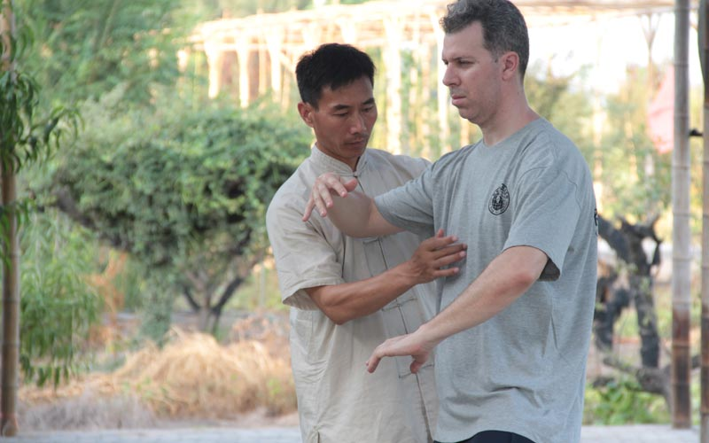
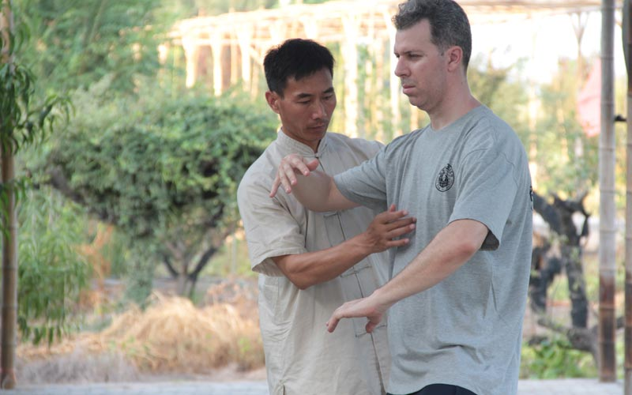

Sifu Martin Ugarte
Comenzó su entrenamiento en Shaolin Norteño como primer estilo, al año siguiente empezó a practicar Tai Chi Chuan, estilo Yang, y poco tiempo después, paralelamente, comenzó con el estilo Hung Gar. Estos 3 estilos son los que actualmente enseña en su Instituto, de manera completa. Además conoce otros sistemas de kung fu, como el Choy Lei Fat, Mantis, Wen Sheng Quan, Chang Quan, Cha Quan, Hua Quan, etc. En materia de capacitación, ha viajado en el 2001 a entrenar directamente con el Gran Maestro Jerry Lee a Miami, y en Bs As ha tomado cursos y seminarios con Maestros de primera línea de diversos estilos, tales como Leo Imamura (Ving Tsun), Chan Kowk Wai (Choy Lei Fat y Shaolin Norteño), Dow Wan Chun (Cha chuen), Li Cang (Ba Gua Zhang y Xing Yi Quan), Sun De Yao (Taiji Mei Hua Tang Lang) y otros.

En Diciembre del 2006, Martín Ugarte viajó a CHINA, cuna del kung fu. Permaneció entrenando por más de 2 meses, regresando en marzo del 2007. Estuvo tomando clases con diferentes Maestros, entre ellos, el Sifu Wang An Ling, líder mundial del estilo Wen Sheng Quan, el Gran Maestro Lai Han Liang (Shaolin Norteño, Choy Lei Fat y Tai chi chuan), Li Qing Xuang ( Xin Yi Quan) y Li Cang ( Ba Gua Zhang y Xing Yi Quan). Además, estuvo visitando el Templo Shaolin en 2 oportunidades, y conociendo escuelas aledañas al mismo. En Septiembre del 2010, el Sifu Martín Ugarte viaja por 2da vez a CHINA, esta vez con un grupo de 10 alumnos, todos ellos avanzados. Permanece 2 meses y medio entrenando wen sheng quan en la ciudad de Jining, y Shaolin Norteño y Choy Li Fat con el Maestro Lai Han Liang en la ciudad de Guangzhou. Es la 1era vez que un grupo tan numeroso de la escuela entrena en China con el Maestro Lai. Además el Sifu Martín Ugarte visitó el Templo Shaolin y la villa de Chen Jia Gou (cuna del taijiquan), y distintas ciudades de China y de Japón, tales como Shanghai, Beijing, Xian, Luoyang, Foshan, Hong Kong, Guilin, Tokyo, Kyoto, etc.
En Septiembre del 2012, el Sifu Martín Ugarte viaja por 3era vez a CHINA, esta vez con un grupo de 11 alumnos, todos ellos avanzados. Permanece 2 meses entrenando wen sheng quan en la ciudad de Jining con los Sifus Zhang y Liu, discípulos del Maestro Wang An Lin, líder mundial del estilo. También entrenan en la ciudad de Jinan con maestros de tang lang quan, cha quan y hua quan, todos ellos de primer nivel. En la ciudad de Shanghai, visita y practica en la Chin Woo. Además, el Sifu Martín Ugarte visitó el Templo Shaolin y la villa de Chen Jia Gou (cuna del taijiquan), y distintas ciudades de China tales como Beijing, Luoyang, Lijiang, Dengfeng, Hong Kong, etc. En Septiembre de 2013, el Sifu Martín Ugarte viaja a USA a entrenar directamente con su Maestro Wang An Lin, líder mundial del estilo wen sheng quan. Permanece 15 días entrenando diariamente taijiquan estilo chen, qigong, wen sheng quan, palancas, teoría, historia, etc.

En Agosto de 2014, el Sifu Martín Ugarte viaja por 4ta vez a CHINA. Allí entrenó wenshengquan y taijiquan en la ciudad de Jining con los Sifus Zhang y Liu, discípulos del Maestro Wang An Lin, múltiple campeón mundial de ambos estilos. También entrena en la ciudad de Jinan con los Maestros Tang y Xiang los estilos cha quan, hua quan y bajiquan. Visita la ciudad de Qingdao y cierra el viaje entrenando Chen Taijiquan en la escuela del Maestro Chen Bing, en la aldea de Chen Jia Gou. En Mayo de 2016, el Sifu Martín Ugarte viaja por 5ta vez a CHINA. Allí entrenó wenshengquan y hun yuan taijiquan en la ciudad de Jining con los Sifus Zhang y Liu, discípulos principales del Maestro Wang An Lin, múltiple campeón mundial de ambos estilos. También visitó y entrenó choy li fat y shaolin norteño con el Maestro Lai Han Liang en la ciudad de Guangzhou, y visitó las ciudades de Foshan y Lijiang, completando su viaje en Beijing.
 

En 2017 viaja a China con 14 alumnos por 6ta vez. Allí entrenaron con el Maestro Chen Bing en la aldea Chen Jia Gou varios días, visitaron Jining donde varios profesores de wenshengquan se capacitaron con los Shifus Zhang y Liu. En la ciudad de Jinan entrenamos con varios maestros de tang lang quan, bajiquan, cha quan, hua quan, etc distintas formas y armas, además de competir en un importante torneo con excelentes resultados deportivos. Hicimos un poco de turismo en Xian y Beijing para completar un viaje inolvidable! En 2018 viaja a China por 7ma vez junto a un grupo de 15 alumnos y profesores. Nuevamente vivimos en la aldea entrenando todos los días Chen Taijiquan, y el shifu Martín Ugarte hace la ceremonia de discipulado junto a 150 alumnos del Maestro Chen Bing, y se convierte en el 1er argentino en ser aceptado como discípulo formal del Maestro Chen Bing, todo un honor y responsabilidad. Actualmente es el representante y director de la escuela Chen Bing Taiji Academy Argentina. Luego de esa experiencia inolvidable, fuimos a Jining a entrenar wen sheng quan, a Guangzhou a entrenar shaolin con Sifu Lai y a Hong Kong junto al Sifu Che Kong Mak realizamos hung gar, completando un mes a puro kung fu tradicional! Además el Shifu Ugarte ha viajado incontables veces siguiendo a su Shifu Chen Bing a distintas ciudades como Los Ángeles, Indianápolis, Columbus, Washington, Tucson, Brasilia, Santiago de Chile, donde además de seguir aprendiendo, ha compartido la vida diaria con su Shifu, algo muy valioso en la relación maestro-discípulo.